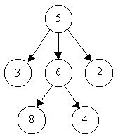
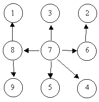
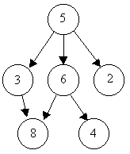

트리는 굉장히 잘 알려진 자료 구조이다. 트리를 만족하는 자료 구조는 비어 있거나(노드의 개수가 0개), 노드의 개수가 1개 이상이고 방향 간선이 존재하며 다음과 같은 조건을 만족해야 한다. 이때, 노드 u에서 노드 v로 가는 간선이 존재하면 간선을 u에 대해서는 '나가는 간선', v에 대해서는 '들어오는 간선'이라고 하자.
아래의 그림을 보자. 원은 노드, 화살표는 간선을 의미하며, 화살표의 방향이 노드 u에서 노드 v로 향하는 경우 이는 이 간선이 u에서 나가는 간선이며 v로 들어오는 간선이다. 3개의 그림 중 앞의 2개는 트리지만 뒤의 1개는 트리가 아니다.



당신은 간선의 정보들을 받아서 해당 케이스가 트리인지를 판별해야 한다.
입력은 여러 개의 테스트 케이스로 이루어져 있으며, 입력의 끝에는 두 개의 음의 정수가 주어진다.
각 테스트 케이스는 여러 개의 정수쌍으로 이루어져 있으며, 테스트 케이스의 끝에는 두 개의 0이 주어진다.
각 정수쌍 u, v에 대해서 이는 노드 u에서 노드 v로 가는 간선이 존재함을 의미한다. u와 v는 0보다 크다.
각 테스트 케이스에 대해서, 테스트 케이스의 번호가 k일 때(k는 1부터 시작하며, 1씩 증가한다) 트리일 경우 "Case k is a tree."를, 트리가 아닐 경우 "Case k is not a tree."를 출력한다.
Input:
6 8 5 3 5 2 6 4
5 6 0 0
8 1 7 3 6 2 8 9 7 5
7 4 7 8 7 6 0 0
3 8 6 8 6 4
5 3 5 6 5 2 0 0
-1 -1
Output:
Case 1 is a tree.
Case 2 is a tree.
Case 3 is not a tree.